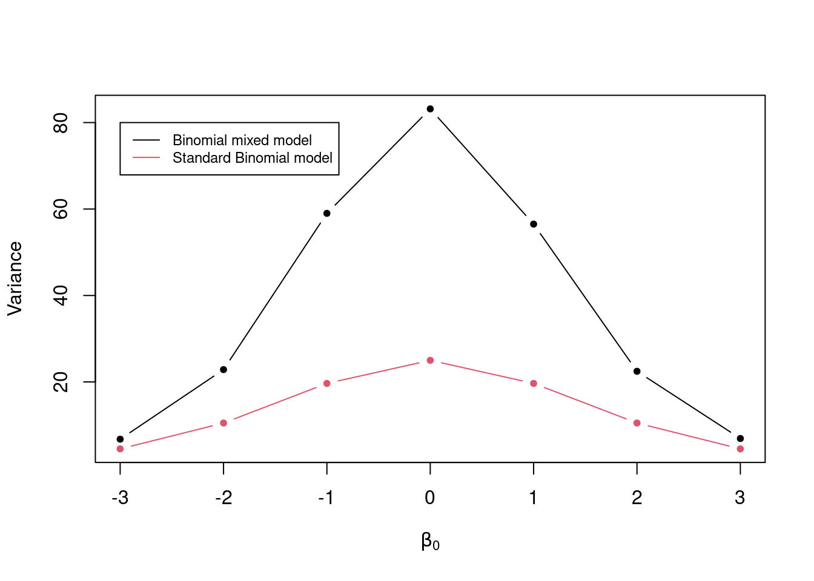
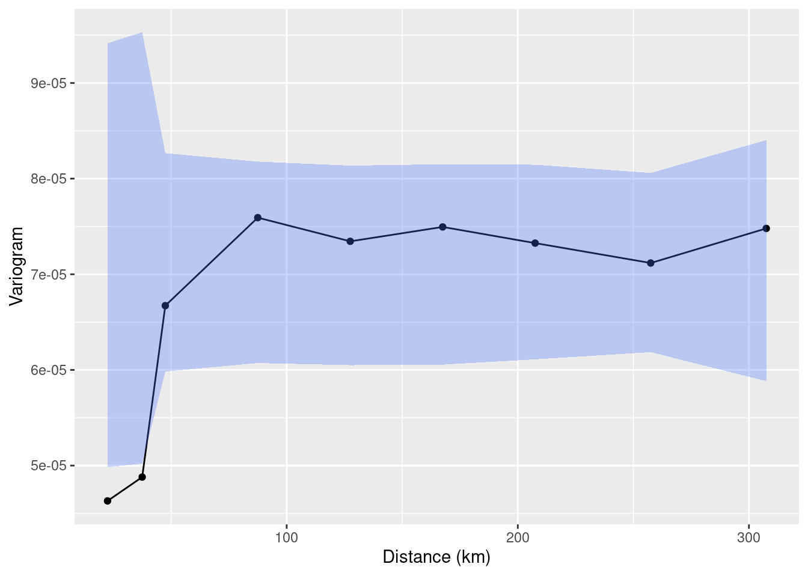

## Linking to GEOS 3.10.2, GDAL 3.4.3, PROJ 8.2.1; sf_use_s2() is TRUE3 Model formulation and parameter estimation
List of the main functions used in the chapter
| Function | R Package | Used for |
|---|---|---|
lmer |
lme4 |
Fitting linear mixed models |
glmer |
lme4 |
Fitting generalized linear mixed models |
glgm |
RiskMap |
Fitting generalized linear mixed models |
s_variogram |
RiskMap |
Computing the empirical variogram and carrying out permutation test for spatial independence |
3.1 Exploratory analysis
As illustrated in Figure 1.8, exploratory analysis is the first step that should be carried out in a statistical analysis. This stage is essential to inform how covariates should be introduced in the model and, in our case, whether the variation unexplained by those covariates exhibits spatial correlation.
In the exploratory analysis of count data, we will also look at how overdispersion, which is a necessary, though not sufficient, condition for residual spatial correlation.
3.1.1 Exploring associations with risk factors using count data
Assessment of the association between the health outcome of interest and non-categorical (i.e. continuous) risk factors can be carried using graphical tools, such scatter plots. The graphical inspection of the empirical association between the outcome and the covariates is especially useful to identify non-linear patterns in the relationship which should then be accounted for in the model formulation.
In this section, we look more closely at the case when the observed outcome is a count which requires a different treatment from continuously measured outcomes, which are generally covered by most statistics textbooks (see, for example, Chapter 1 of Weisberg (2014)).
3.1.1.1 When the outcome is an aggregated count
Let us first consider the example of the river-blindness data in Liberia (Section 1.4.2), and examine the association between prevalence and elevation. We first generate a plot of the prevalence against the measured elevation at each of the sample locations
liberia$prev <- liberia$npos/liberia$ntest
ggplot(liberia, aes(x = elevation, y = prev)) + geom_point() +
labs(x="Elevation (meters)",y="Prevalence")
The plot shown in Figure 3.1 shows that, as elevation increases from 0 to around 150 meters, prevalence rapidly increases to around 0.25 and, for larger values in elevation than 150 meters, the relationship levels off. This begs the question of how we can account for this in a regression model. To answer this question rigorously, however, the plot in Figure 3.1 cannot be used. This is because, when the modelled outcome is a bounded Binomial count, regression relationships are specified on the logit-transformed prevalence (log-odds) scale; see Table 1.3 in Section Section 1.5 . To explore regression relationships in the case of prevalence data, it is convenient to use the so-called empirical logit in place of the empirical prevalence. The empirical logit is defined as
\[ l_{i} = \log\left\{\frac{y_i + 1/2}{n_i - y_i + 1/2}\right\} \tag{3.1}\]
where \(y_i\) are the number of individuals who tested positive for riverblindness and \(n_i\) is the total number of people tested at a location. The reason for using the empirical logit, rather than the standard logit transformation applied directly to the empirical prevalence, is that it allows to generate finite values for empirical prevalence values of 0 and 1, for which the standard logit transformation is not defined.
# The empirical logit
liberia$elogit <- log((liberia$npos+0.5)/
(liberia$ntest-liberia$npos+0.5))
ggplot(liberia, aes(x = elevation, y = elogit)) + geom_point() +
# Adding a smoothing spline
labs(x="Elevation (meters)",y="Empirical logit") +
stat_smooth(method = "gam", formula = y ~ s(x),se=FALSE)+
# Adding linear regression fit with log-transformed elevation
stat_smooth(method = "lm", formula = y ~ log(x),
col="green",lty="dashed",se=FALSE) +
# Adding linear regression fit with change point in 150 meters
stat_smooth(method = "lm", formula = y ~ x + pmax(x-150, 0),
col="red",lty="dashed",se=FALSE)

Figure 3.2 shows the scatter plot of the empirical logit against elevation. In this plot, we have also added three lines though the stat_smooth from the ggplot2 package. Using this function, we first pass the term gam to method to add a penalized smoothing spline (Hastie, Tibshirani, and Friedman 2001), represented by the blue solid line. The smoothing spline allows us to better discern how the type of relationship and how to best capture it using a standard regression approach. As er can see from Figure 3.2, the smoothing spline corroborates our initial observation of a positive relationship up to about 150 meters, followed by a plateau.
To capture this non-linear relationship, we can use the two following approaches. The first is based on a simple log-transformation of elevation and is represented in Figure 3.2 by the green line. If were to express this relationship using a standard Binomial regression model, this would take the form \[ \log\left\{\frac{p(x_i)}{1-p(x_i)}\right\} = \beta_0 + \beta_1 \log\{e(x_i)\} \tag{3.2}\] where \(p(x_i)\) and \(e(x_i)\) are the river-blindness prevalence and elevation at sampled location \(x_i\), respectively.
Alternatively, the non-linear effect of elevation on prevalence could be captured using a linear spline. Put in simple terms, we want to fit a linear regression model that allows for a change in slope above 150 meters. Formally, this is expressed in a Binomial regression model as \[
\log\left\{\frac{p(x_i)}{1-p(x_i)}\right\} = \beta_0 + \beta_1 e(x_i) + \beta_{2} \max\{e(x_i)-150, 0\}.
\tag{3.3}\] Based on the equation above, the effect of elevation below 150 meters is quantified by the parameter \(\beta_1\). Above 150 meters, instead, the effect of elevation becomes \(\beta_1 + \beta_2\). Note that the function pmax (and not the standard base function max) should be used in R when the computation of the maximum between a scalar value and each of the components of a numeric vector is required.
Before proceeding further, it is important to explain the differences between the use of the logarithmic transformation (Equation 3.2) and the linear spline (Equation 3.3). We observe that both curves provide a similar fit to the data, with larger differences observed for larger values in elevation, where the log-transformed elevation models yields larger values for the predicted prevalence. This also suggests that if we were to extrapolate the predictions beyond 600 meters in elevation the implied pattern by the model with the log-transformed elevation would predict an increasingly larger elevation, which is unrealistic, since the fly that transmits the diseases cannot breed at those altitudes. The linear spline model instead would generate predictions that would be very similar to those observed between 150 and 600 meters. From this point view, the linear spline model would thus have more scientific validity than the other model. However, which of the two approaches should be chosen to model the effect of elevation is a question that closely depends on the research question to be addressed.
If the interest of the study was in better understanding the association between elevation and prevalence, the linear spline model does not only provide a more credible explanation but also its regression parameters can be more easily interpreted. In fact, for a unit increase in elevation, the multiplicative change in the odds for river-blindness is \(\exp\{\beta_1\}\), if elevation is below 150 meters, and \(\exp\{\beta_1+\beta_2\}\), if elevation is above 150 meters. When instead we use the log-transformed elevation, the interpretation of \(\beta_1\) in Equation 3.2 is slightly more complicated, as it is based on the multiplicative increase in elevation by the same amount given by the base of the algorithm, which is about \(e \approx 2.718\)1. To avoid this, one could rescale the regression coefficient as, for example, \(\beta_1/\log_{2}(e)\) which would be interpreted as the multiplicative change in the odds for river-blindness for a doubling in elevation. However, a doubling in elevation is less meaningful when considering larger values of elevation.
When the goal of statistical analysis is instead in developing a predictive model for the outcome of interest, the explanatory power and interpretability of the model may be of less concern. For this reason, the model with the log-transformed model could be preferred over the model with the linear spline, if it shown to yield more predictive power. We will come back to this point again in Chapter 5, where will show how to assess and compare the predictive performance of different geostatistical models.
The other type of aggregated count data that we consider are unbounded counts. The Anopheles mosquitoes data-set (Section 1.4.4) is an example of this, since there is no upper limit to the number of mosquitoes that can be trapped at a location. Let us consider the covariate represented by elevation. In this case, the simplest model that can be used to analyse the data is a Poisson regression, where the linear predictor is defined on the log of the mean number of mosquitoes (Table 1.3). Hence, exploratory plots for the association with covariates should be generated using the log transformed counts of mosquitoes. In this instance, to avoid taking the log of zero, we can add 1 to the reported counts, if required. The variable of the An.gambiae in the anopheles data-set does not contain any 0, hence we simply apply the log tranformation without adding 1.
anopheles$log_counts <- log(anopheles$An.gambiae)
ggplot(anopheles, aes(x = elevation, y = log_counts)) + geom_point() +
# Adding a smoothing spline
labs(x="Elevation (meters)",y="Log number of An. gambiae mosquitoes") +
stat_smooth(method = "lm", formula = y ~ x, se=FALSE)
The scatter plot of Figure 3.3 shows that there is a negative, though weak, association, with the average number of mosquitoes decreasing for increasing elevation. In this instance, the assumption of a linear relationship with elevation would be a reasonable choice.
3.1.1.2 When the outcome is an invidual-level binary indicator
We now consider the malaria data from Kenya (Section 1.4.3) where the main outcome is the result from a rapid diagnostic test (RDT) for malaria from individuals within households. In this case, because the outcome only takes two values, 1 for a positive RDT test result and 0 otherwise, the direct application of the empirical logit from Equation 3.1 would not help us to generate informative scatter plots. Throughout the book, we will consider the data from the community survey only, hence we work with a subset of the data which we shall name malkenya_comm
malkenya_comm <- malkenya[malkenya$Survey=="community", ]To show how this issue can be overcome, let us consider the variables age and gender. To generate a plot that can help us understand between the relationship with malaria prevalence and the two risk factors, we proceed as follows.
# Grouping of ages into classes defined through "breaks"
malkenya_comm$Age_class <- cut(malkenya_comm$Age,
breaks = c(0, 5, 10, 15, 30, 40, 50, 100),
include.lowest = TRUE)Using the cut function, we first split age (in years) into classes through the argument breaks. The classification of age into \([0,5]\), \((5, 10]\) and \((10, 15]\) is common in many malaria epidemiology studies, as children are one of the groups at highest risk malaria. The choice of the other classes of age reflects instead the need to balance the number of observations falling in each of the classes.
# Computation of the empirical logit by age groups and gender
age_class_data <- aggregate(RDT ~ Age_class + Gender,
data = malkenya_comm,
FUN = function(y)
log((sum(y)+0.5)/(length(y)-sum(y)+0.5)))We then compute the empirical logit, using the total number of cases within age group and by gender. For a given age group and gender, which we denote as \(\mathcal{C}\), the empirical logit in Equation 3.1, now takes the form \[
l_{\mathcal{C}} = \log\left\{\frac{\sum_{i \in \mathcal{C}} y_{i} + 0.5}{|\mathcal{C}|- \sum_{i \in \mathcal{C}} y_{i} + 0.5} \right\}
\tag{3.4}\] where \(y_i\) are the individual binary outcomes and \(i\in \mathcal{C}\) is used to indicate that the sum is carried out over all the individuals who belong the class \(\mathcal{C}\), identified by a specific age group and gender. Finally, \(|\mathcal{C}|\) is the number of individuals who fall within \(\mathcal{C}\). In the code above, the empirical logit in Equation 3.4 is computed using the aggregate function. An inspection of the object age_class_data, a data frame, shows that the empirical is found in the column named RDT.
# Computation of the average age within each age group
age_class_data$age_mean_point <- aggregate(Age ~ Age_class + Gender,
data = malkenya_comm,
FUN = mean)$Age
# Number of individuals within each age group, by gender
age_class_data$n_obs <- aggregate(Age ~ Age_class + Gender,
data = malkenya_comm,
FUN = length)$AgeIn order to generate the scatter-plot, we compute the average age within each age group by gender, and use these as our values for the x-axis. Note that since we only need to obtain the average age from this output, we use $Age to extract this only and allocate to the column age_mean_point. Finally, we also compute the number of observations within each of classes and place this in n_obs.
ggplot(age_class_data, aes(x = age_mean_point, y = RDT,
size = n_obs,
colour = Gender)) +
geom_point() +
labs(x="Age (years)",y="Empirical logit") 
The resulting plot in Figure 3.4 shows the empirical logit against age by gender, with the size of each of the points proportional to the number of observations falling within each class. The observed patterns are explained by the fact that young children, especially those under the age of five, are particularly vulnerable to severe malaria infections. This is primarily due to their immature immune systems and lack of acquired immunity. As individuals grow older, they generally develop partial immunity to malaria through repeated exposure to the disease. This acquired immunity can provide some level of protection against severe malaria. At the same time, gender roles and activities can influence exposure to malaria-carrying mosquitoes. For example, men may spend more time outdoors for work or other activities, increasing their exposure to mosquito bites and thus their risk of infection. In addition, there are also biological factors to consider. Hormonal and genetic differences between males and females may also contribute to variations in immune responses to malaria infection. The interaction between age and gender is complex and may vary depending on the specific context and population being studied. A 2020 report from the Bill & Melinda Gates foundation provides a detailed overview of this and other aspects related to gender and malaria (Katz and Bill & Melinda Gates Foundation 2020).
To account for age in a model for malaria prevalence, several approaches are possible, some of which have been developed using biological models (Smith et al. 2007). To model the patterns observed in Figure 3.4, we can follow the same approach used in the previous section to model the relationship between elevation and river-blindness prevalence. First, let us consider age without the effect of gender. Let \(p_{j}(x_i)\) denote the probability of a positive RDT for the \(j\)-th individual living in a household at location \(x_i\). Assuming that malaria risk reaches its peak at 15 years of age, we can capture the non-linear relationship using a linear spline with two knots, one at 15 years and a second one at 40 years. This is expressed as \[ \begin{aligned} \log\left\{\frac{p_{j}(x_i)}{1-p_j(x_i)}\right\} = \beta_{0} + \beta_{1}a_{ij}+\beta_{2} \times\max\{a_{ij}-15, 0\} + \beta_{3}\max\{a_{ij}-40, 0\} \end{aligned} \tag{3.5}\] where \(a_{ij}\) is the age, in years, for the \(j\)-th individual at household \(i\). Based on this model the effect of age on RDT prevalence is \(\beta_{1}\), for \(a_{ij} < 15\), \(\beta_{1}+\beta_{2}\), for \(15 < a_{ij} < 40\), and \(\beta_{1}+\beta_{2}+\beta_{3}\) for \(a_{ij} > 40\).
Figure 3.4 indicates that age may interact with gender, meaning that the effect of gender on RDT prevalence changes across age, with larger differences observed between males and females for ages above 20 years. To assess such differences using a standard Binomial regression model, the linear predictor for RDT prevalence can be formulated as \[ \begin{aligned} \log\left\{\frac{p_{j}(x_i)}{1-p_j(x_i)}\right\} = \beta_{0} + (\beta_{1} + \beta_{1}^*g_{ij})\times a_{ij}+(\beta_{2} + \beta_{2}^*g_{ij})\times\max\{a_{ij}-15, 0\} + \\ (\beta_{3} + \beta_{3}^*g_{ij}) \times \max\{a_{ij}-40, 0\} \end{aligned} \tag{3.6}\] where \(g_{ij}\) is the indicator for gender, with 1 corresponding to male and 0 to female. The coefficients \(\beta_{1}^*\), \(\beta_{2}^*\) and \(\beta_{3}^*\) thus quantify the differences in risk between the two genders for ages below 15 years, betwee 15 and 40 years, and above 40 years, respectively. If all of those coefficients were 0, the model in Equation 3.5 would be recovered.
glm_age_gender_interaction <- glm(RDT ~ Age + Gender:Age +
pmax(Age-15, 0) + Gender:pmax(Age-15, 0) +
pmax(Age-40, 0) + Gender:pmax(Age-40, 0),
data = malkenya_comm, family = binomial)
summary(glm_age_gender_interaction)
##
## Call:
## glm(formula = RDT ~ Age + Gender:Age + pmax(Age - 15, 0) + Gender:pmax(Age -
## 15, 0) + pmax(Age - 40, 0) + Gender:pmax(Age - 40, 0), family = binomial,
## data = malkenya_comm)
##
## Deviance Residuals:
## Min 1Q Median 3Q Max
## -0.7681 -0.7051 -0.4940 -0.2734 2.7294
##
## Coefficients:
## Estimate Std. Error z value Pr(>|z|)
## (Intercept) -1.05835 0.10245 -10.331 < 2e-16 ***
## Age -0.03384 0.01310 -2.584 0.00978 **
## pmax(Age - 15, 0) -0.03975 0.02356 -1.687 0.09162 .
## pmax(Age - 40, 0) 0.09170 0.02482 3.695 0.00022 ***
## Age:GenderMale 0.01428 0.01221 1.170 0.24202
## GenderMale:pmax(Age - 15, 0) -0.03625 0.03145 -1.153 0.24908
## GenderMale:pmax(Age - 40, 0) 0.02451 0.04320 0.567 0.57052
## ---
## Signif. codes: 0 '***' 0.001 '**' 0.01 '*' 0.05 '.' 0.1 ' ' 1
##
## (Dispersion parameter for binomial family taken to be 1)
##
## Null deviance: 2875.8 on 3351 degrees of freedom
## Residual deviance: 2673.8 on 3345 degrees of freedom
## AIC: 2687.8
##
## Number of Fisher Scoring iterations: 5The code above shows how to fit the model specified in Equation 3.6. The terms Age, pmax(Age-15, 0) and pmax(Age-40, 0) respectively correspond to \(\beta_{1}\), \(\beta_{2}\) and \(\beta_{3}\), whilst the Gender:Age, Gender:pmax(Age-15, 0) and Gender:pmax(Age-40, 0) to \(\beta_{1}^*\), \(\beta_{2}^*\) and \(\beta_{3}^*\), respectively. In the summary of the fitted model, we observe that the interaction coefficients are non-statistically significant. However, removing the interaction based on the fact that each of the coefficients have each p-values larger than the conventional level of 5% would be wrong. Instead we should carry out the likelihood ratio test, as shown below.
glm_age_gender_no_interaction <- glm(RDT ~ Age + pmax(Age-15, 0) + pmax(Age-40, 0),
data = malkenya_comm, family = binomial)
anova(glm_age_gender_no_interaction, glm_age_gender_interaction, test = "Chisq")
## Analysis of Deviance Table
##
## Model 1: RDT ~ Age + pmax(Age - 15, 0) + pmax(Age - 40, 0)
## Model 2: RDT ~ Age + Gender:Age + pmax(Age - 15, 0) + Gender:pmax(Age -
## 15, 0) + pmax(Age - 40, 0) + Gender:pmax(Age - 40, 0)
## Resid. Df Resid. Dev Df Deviance Pr(>Chi)
## 1 3348 2675.6
## 2 3345 2673.8 3 1.8051 0.6138To carry out the likelihood ratio test to assess the null hypothesis that \(\beta_{1}^*=\beta_{2}^*=\beta_{3}^*=0\), we first fit the simplified nested model under this null hypothesis. The likelihood ratio test can then be carried out using the anova command as shown. The p-value indicates that the we do not find evidence against the null hypothesis, hence in our analysis of the data we might favour the simplified model that does not assumes an interaction between the two genders.
The approach just illustrated, can also be applied to explore the association with other continuous variables that are a property of the household and not of the individual. Let us, for example, consider the variable elevation from the malkenya data-set.
malkenya_comm$elevation_class <- cut(malkenya_comm$elevation,
breaks = quantile(malkenya_comm$elevation, seq(0, 1, by = 0.1)),
include.lowest = TRUE)Following the same approach used for age, we first split elevation into classes. To define these, we use the deciles of the empirical distribution of elevation which we calculate using the quantile function above. In this way we also ensure that the number of observations falling within each class of elevation is approximately the same.
# Computation of the empirical logit by classes of elevation
elev_class_data <- aggregate(RDT ~ elevation_class,
data = malkenya_comm,
FUN = function(y)
log((sum(y)+0.5)/(length(y)-sum(y)+0.5)))
# Computation of the average elevation within each class of elevation
elev_class_data$elevation_mean <- aggregate(elevation ~ elevation_class,
data = malkenya_comm,
FUN = mean)$elevationWe then compute the empirical logit and the average elevation for each class of elevation. The empirical logit is computed as already defined in Equation 3.4, where now the definition of \(\mathcal{C}\) is given by a specific decile used to split the distribution of elevation.
ggplot(elev_class_data, aes(x = elevation_mean, y = RDT),
size = n_obs) +
geom_point() +
labs(x="Elevation (meters)",y="Empirical logit") 
The resulting plot in Figure 3.5 shows an approximately linear relationship with decreasing values of the empirical logit for increasing elevation. This is expected because the cooler environment at higher altitudes is less favourable to the development of the overall mosquito life cycle.
An alternative approach to generate a scatter plot for assessing the association between elevation and the empirical logit would be to aggregate the data at household level, rather than using classes of elevation. However, this approach does not work as the one illustrated above when only one individual is sampled for each location. In the case of the malkenya data, the great majority of the locations only include one individual making this second approach less useful than the one illustrated.
Other more sophisticated approaches for the exploration of the associations between covariates and binary outcomes are available. For example, the use of the empirical logit could be avoided by using non-parametric regression methods for Binomial outcomes (Bowman 1997), also implemented in sm package in R. Our view is that a careful exploratory analysis based on simpler methods, as those illustrated above, can be equally effective to inform the module formulation.
3.1.2 Exploring overdispersion in count data
One of the main advantages in the use of covariates is the ability to attribute part of the variation of the outcome to a set of measured variables and, hence, reduce the uncertainty of our inferences. However, it almost always the case that the finite number of covariates at our disposal is not enough to fully explain the variation in the outcome. In other words, the existence of unmeasured covariates that are related to the modelled outcome give rise to the so called residual variation. In a standard linear regression model the extent to which we are able to account for important covariates is directly linked to the size of the variance of the residuals. In the case of count data, instead, this link is less well defined and one of the main consequences of the omission of covariates, which we address in this chapter, is overdispersion.
Overdispersion occurs when the variability of the data is larger than that implied by the generalized linear model (GLM) fitted to them. For example, if we consider the Binomial distribution, the presence of overdispersion implies that \(V(Y_i) > n_i \mu_{i}(1-\mu_i)\), where we recall that \(n_i\) is the Binomial denominator and \(mu_i\) is the probability of “success” for each of the \(n_i\) Bernoulli trials; for a Poisson distribution with \(E(Y_i) = \mu_i\), instead, overdispersion implies that \(V(Y_i) > \mu_{i}\).
Assessment of the overdispersion for count data can be carried out in different ways depending on the goal of the statistical analysis. Since the focus of this book is to illustrate how to formulate and apply geostatistical models, the most natural approach to assess overdispersion is through the use of generalized linear mixed models (GLMMs). The class of GLMMs that we consider in this and the next section are obtained by replacing the spatial Gaussian process \(S(x_i)\) in introduced in Equation 1.4 with a set of mutually independent random effects, which we denote as \(Z_i\), and thus write \[ g(\mu_i) = d(x_i)^\top \beta + Z_i. \tag{3.7}\] The model above accounts for the overdispersion in the data through \(Z_i\) whose variance can be interpreted as an indicator of the amount of overdispersion. To show this, we carry out a small simulation as follows. For simplicity, we consider the Binomial mixed model with an intercept only, hence \[ \log\left\{\frac{\mu_i}{1-\mu_i}\right\} = \beta_0 + Z_i \tag{3.8}\] and assume that the \(Z_i\) follow a set of mutually independent Gaussian variables with mean 0 and variance \(\tau^2\). In our simulation we vary \(\beta_0\) over the set \(\{-3, -2, -1, 0, 1, 2, 3\}\) and set \(\tau^2=0.1\) and the binomial denominators to \(n_i = 100\). For a given value of \(\beta_0\), we then proceed through the following iterative steps.
Simulate 10,000 values for \(Z_i\) from a Gaussian distribution with mean 0 and variance \(\tau^2\).
Compute the probabilities \(\mu_i\) based on Equation 3.8.
Simulate 10,000 values from a Binomial model with probability of success \(\mu_i\) and denominator \(n_i\).
Compute the empirical variance of the counts \(y_i\) simulated in the previous step.
Change the value of \(\beta_0\) and repeat the previous steps, for all the values of \(\beta_0\).
The code below shows the implementation of the above steps in R.
# Number of simulations
n_sim <- 10000
# Variance of the Z_i
tau2 <- 0.1
# Binomial denominator
bin_denom <- 100
# Intercept values
beta0 <- c(-3, -2, -1, 0, 1, 2, 3)
# Vector where we store the computed variance from
# the simulated counts from the Binomial mixed model
var_data <- rep(NA, length(beta0))
for(j in 1:length(beta0)) {
# Simulation of the random effects Z_i
Z_i_sim <- rnorm(n_sim, sd = sqrt(tau2))
# Linear predictor of the Binomial mixed model
lp <- beta0[j] + Z_i_sim
# Probabilities of the Binomial distribution conditional on Z_i
prob_sim <- exp(lp)/(1+exp(lp))
# Simulation of the counts from the Binomial mixed model
y_i_sim <- rbinom(n_sim, size = bin_denom, prob = prob_sim)
# Empirical variance from the simulated counts
var_data[j] <- var(y_i_sim)
}
# Probabilities from the standard Binomial model (Z_i = 0)
probs_binomial <- exp(beta0)/(1+exp(beta0))
# Variance from the standard Binomial model
var_bimomial <- bin_denom*probs_binomial*(1-probs_binomial)matplot(beta0, cbind(var_data, var_bimomial), type = "b", pch = 20,
lty = "solid", ylab = "Variance", xlab = expression(beta[0]))
legend(-3, 80, c("Binomial mixed model", "Standard Binomial model"),
col=1:2, lty = "solid", cex = 0.75)
Figure 3.6 shows the results of the simulation. In this figure, the red line corresponds to the variance of a standard Binomial model, obtained by setting \(Z_i=0\) and computed as \(n_i \mu_i (1-\mu_i)\) with \(\mu_i = \exp\{\beta_0\}/(1+\exp\{\beta_0\})\). As expected, this plot shows that the variance of the simulated counts from the mixed model in Equation 3.8 exhibit a larger variance than would be expected under the standard Binomial model. It also indicates that the chosen value for the variance of \(Z_i\) of \(\tau^2 = 0.1\) corresponds to a significant amount of dispersion. One way to relate \(\tau^2\) to the amount of overdispersion is by considering that, following from the properties of a univariate Gaussian distribution, a priori the \(Z_i\) will take values between \(-1.96 \sqrt{\tau^2}\) and \(+1.96 \sqrt{\tau^2}\) with approximately 95\(\%\) probability. That implies that \(\exp\{Z_i\}\), which expresses the effect of the random effects on the odds ratios, will be with 95\(\%\) probability between \(\exp\{-1.96 \sqrt{\tau^2}\}\) and \(\exp\{+1.96 \sqrt{\tau^2}\}\). By replacing \(\tau^2\) with the chosen values for the simulation, those two becomes about 0.54 and 1.86, meaning that with the \(Z_i\) with \(95\%\) probability will have a multiplicative effect on the odds ratios between \(0.54\) and \(1.86\).
We encourage you to do Exercise 1 and Exercise 2 at the end of this chapter, to further explore how generalized linear mixed models can be used as a tool to account for overdispersion.
3.1.2.1 Maximum likelihood estimation of generalized linear mixed models
We now illustrate how to fit a generalize linear mixed, using the anopheles data-set as an example. We consider two models: an intercept-only model and one that uses elevation as a covariate. Let \(\mu(x_i)\) be the number of mosquitoes captured at a location \(x_i\); then the linear predictor with elevation as a covariate takes the form \[
\log\{\mu_i\} = \beta_{0} + \beta_{1} d(x_i) + Z_i
\tag{3.9}\] where \(d(x_i)\) indicates the elevation in meters at location \(x_i\) and the \(Z_i\) are independent and identically distributed Gaussian variables with mean 0 and variance \(\tau^2\). The model with an intercept only is simply obtained by setting \(\beta_1 = 0\).
We carry out the estimation in R using the glmer function from the lme4 package (see Bates et al. (2015) for a detailed tutorial). The glmer function implements the maximum likelihood estimation for generalized linear mixed models. The code below shows how the glmer is used to carry out this step for the model in Equation 3.9 and the one withuot covariates.
# Create the ID of the location
anopheles$ID_loc <- 1:nrow(anopheles)
# Poisson mixed model with elevation
fit_glmer_elev <- glmer(An.gambiae ~ scale(elevation) + (1|ID_loc), family = poisson,
data = anopheles, nAGQ = 25)
# Poisson mixed model with intercept only
fit_glmer_int <- glmer(An.gambiae ~ (1|ID_loc), family = poisson,
data = anopheles, nAGQ = 25)To fit the model with glmer, we first must create a variable in our data-set that allows us to identify the location associated with each count. In this case, since every row corresponds to a different location, we simply use the row number to identify the locations and save this in the ID_loc variable. The random effects \(Z_i\) are then included in the model by adding (1 | ID_loc) in the formula of the glmer function.
When introducing the variable elevation, we standardize the variable so that its mean is 0 and its variance is 1. This is done to aid the convergence of the algorithm used to fit the model and it is generally considered good practice, especially when many variables with different scales are used as covariates. However, we emphasize that standardizing a variable does not affect the fit of the model to the data. This is because the model with the standardized variable is a reparametrization of the model with the unstandardized variable. In other words, a model that uses standardized covariates only attaches a different interpretation to its regression coefficients while maintaining the same goodness of fit of the model with that uses the covariates on their original scale.
The argument nAGQ is used to define the precision of the approximation of the maximum likelihood estimation algorithm. By default nAGQ = 1, which corresponds to the Laplace approximation. Values for nAGQ larger than 1 are used to define the number of points of the adaptive Gaussian-Hermite quadrature. The general principle is that the larger nAGQ the better, but at the expense of an increased computing time. Based on the guidelines and help pages of the lme4 package, it is stated that a reasonable value for nAGQ is 25. For more technical details on this aspect, we refer the reader to Bates et al. (2015).
We can now look at the summary of the fitted models to the mosquitoes data-set.
### Summary of the model with elevation
summary(fit_glmer_elev)
## Generalized linear mixed model fit by maximum likelihood (Adaptive
## Gauss-Hermite Quadrature, nAGQ = 25) [glmerMod]
## Family: poisson ( log )
## Formula: An.gambiae ~ scale(elevation) + (1 | ID_loc)
## Data: anopheles
##
## AIC BIC logLik deviance df.resid
## 291.8 300.1 -142.9 285.8 113
##
## Scaled residuals:
## Min 1Q Median 3Q Max
## -0.89574 -0.42469 -0.09483 0.29445 0.53352
##
## Random effects:
## Groups Name Variance Std.Dev.
## ID_loc (Intercept) 0.7146 0.8453
## Number of obs: 116, groups: ID_loc, 116
##
## Fixed effects:
## Estimate Std. Error z value Pr(>|z|)
## (Intercept) 1.53042 0.09365 16.342 <2e-16 ***
## scale(elevation) -0.19794 0.08950 -2.212 0.027 *
## ---
## Signif. codes: 0 '***' 0.001 '**' 0.01 '*' 0.05 '.' 0.1 ' ' 1
##
## Correlation of Fixed Effects:
## (Intr)
## scale(lvtn) 0.036
### Summary of the model with the intercept only
summary(fit_glmer_int)
## Generalized linear mixed model fit by maximum likelihood (Adaptive
## Gauss-Hermite Quadrature, nAGQ = 25) [glmerMod]
## Family: poisson ( log )
## Formula: An.gambiae ~ (1 | ID_loc)
## Data: anopheles
##
## AIC BIC logLik deviance df.resid
## 294.6 300.1 -145.3 290.6 114
##
## Scaled residuals:
## Min 1Q Median 3Q Max
## -0.73816 -0.42718 -0.06941 0.26564 0.45022
##
## Random effects:
## Groups Name Variance Std.Dev.
## ID_loc (Intercept) 0.761 0.8724
## Number of obs: 116, groups: ID_loc, 116
##
## Fixed effects:
## Estimate Std. Error z value Pr(>|z|)
## (Intercept) 1.52849 0.09584 15.95 <2e-16 ***
## ---
## Signif. codes: 0 '***' 0.001 '**' 0.01 '*' 0.05 '.' 0.1 ' ' 1From the summary of the model that uses elevation, we observe the that the estimated regression coefficient \(\beta_{1}\) is statistically significant different from 0. The interpretation of the estimated regression coefficient is the following: for an increase of about 100 meters in elevation, all other things being equal, the average number of mosquitoes decreases by about \(100\% \times [1-\exp\{-0.19794\}] \approx 18\%\). Note that when using a standardized variable, a unit increase for this corresponds to an increase in the original unstandardized variable equal to its standard deviation, which for the elevation variable is about 100 meters.
From the summaries of the two models, under Random effects:, we obtain the estimates associates with the random effects introduced in the model. In this case, since we only have introduced \(Z_i\), this part of summary provides the maximum likelihood estimate for \(\tau^2\), the variance of \(Z_i\), which found on the line where ID_loc is printed. We then observe that the estimates for \(\tau^2\) for the intercept-only model is 0.761, whilst for the model with elevation this is 0.7146. Note that the figures reported under Std.Dev. are simply the square root of the value reported under Variance. As expected, the introduction of elevation contributes to the explanation of the residual variation captured by \(Z_i\), though by a very small amount. The estimated values of \(\tau^2\) thus suggest that there is extra-Binomial variation in the data that is not account for by elevation.
In the next section, we will illustrate how to assess the presence of residual correlation for continuous measurements and overdispersed count data.
3.1.3 Exploring residual spatial correlation
In its most basic form, the concept of spatial correlation can be succinctly encapsulated by Tobler (1970) first law of geography, which posits that “everything is interconnected, but objects in close proximity exhibit stronger relationships than those situated farther apart.” After we have identified the key variables to introduce as covariates in the model (Section 3.1.1) and, in the case of count data, assessed the presence of overdispersion (Section 3.1.2), our final exploratory step consists of assessing whether the residuals of the non spatial model show evidence of spatial correlation. Hence, in geostatistical modelling, the interest is not in the spatial correlation of the data, but rather on understanding whether the variation in the outcome unexplained by the covariates exhibits spatial correlation. We call this residual spatial correlation, to emphasize that spatial correlation is a concept relative to the covariates that we have introduced in the model.
In the context of geostatistical analysis, the tool that is generally used to assess the residual spatial correlation is the the so called empirical variogram. Before looking at the mathematical definition of the empirical variogram, let us consider a generalized linear mixed model as expressed in Equation 3.7. Our goal is then to question the assumption of independently distributed random effects \(Z_i\) by asking whether the \(Z_i\) show evidence of spatial correlation. Let \(Z_i\) and \(Z_j\) be two random effects that are associate with two different locations \(x_i\) and \(x_j\), respectively, and let us take the squared difference between the two \[ V_{ij} = (Z_i - Z_j)^2. \tag{3.10}\] How does the spatial correlation affect the value of \(V_{ij}\)? To answer this question, we can refer to the aforementioned Tobler’s law of geography. When \(x_i\) and \(x_j\) will be closer to each other, then \(Z_i\) and \(Z_j\) will also tend to be more similar to each other, thus making \(V_{ij}\) smaller, on average. On the contrary, when \(x_i\) and \(x_j\) will be further apart, then \(V_{ij}\) will become larger, on average. We can then construct the empirical variogram by considering all possible pairs of locations \(x_i\) and \(x_j\), for which we then compute \(V_{ij}\) and plot this against the distance between \(x_i\) and \(x_j\), which we denote as \(u_{ij}\). If there is spatial correlation in the random effects \(Z_i\), then this will manifest as an average increase in the \(V_{ij}\) as \(u_{ij}\) increases. However, there are still two issues that we have to address before we can generate and plot the empirical variogram.
The first issue is that we do not observe \(Z_i\) as, by definition, this is a latent variable. Hence, we require an estimate for \(Z_i\) which we can then feed into \(V_{ij}\). To emphasize this point, from now on, we shall replace Equation 3.10 with \[
\hat{V}_{ij} = (\hat{Z}_{i} - \hat{Z}_j)^2.
\tag{3.11}\] Several options are available for estimating \(Z_{i}\). Our choice is to use the model of the predictive distribution of \(Z_i\), that is the distribution of \(Z_{i}\) conditioned to the data \(y_i\). This estimator for \(Z_i\) is also readily available from the output of the lmer and glmer functions of the lme4 package, as we will illustrate later in our example in this section.
The second issue is that if simply plot \(\hat{V}_{ij}\) against the distances \(u_{ij}\) (also knwon as cloud variogram), due to the high noiseness in the \(\hat{V}_{ij}\), it may be quite difficult to assess the presence of an increasing trend in the \(\hat{V}_{ij}\) and thus detect spatial correlation. Hence, it is general practice to group the distances \(u_{ij}\) into classes, say \(\mathcal{U}\), and then take average of all the \(\hat{V}_{ij}\) that fall within \(\mathcal{U}\).
We can now write the formal definition of the empirical variogram as \[ \hat{V}(\mathcal{U}) = \frac{1}{2 |\mathcal{U}|} \sum_{(i, j): (u_i, u_j) \in \mathcal{U}} \hat{V}_{ij} \tag{3.12}\] where \(|\mathcal{U}|\) denotes the number of pairs of locations that fall within the distance class \(\mathcal{U}\). The rationale behind dividing by 2 in \(1/2 |\mathcal{U}|\) from the above equation, will be elucidated in Section 3.2, and there is no need for us to delve into this matter at this juncture. When creating the empirical variogram plot, we select the midpoint values of the distance classes \(\mathcal{U}\) to represent the x-axis values.
Before we can evaluate residual spatial correlation, there remains one crucial concern: relying solely on a visual inspection of the empirical variogram is susceptible to human subjectivity. Furthermore, it is worth noting that even a seemingly upward trend observed in the empirical variogram might be merely a product of random fluctuations, rather than a reliable indication of actual residual spatial correlation. To address these concerns and enhance the objectivity of the use of the empirical variogram, one approach would involve comparing the observed empirical variogram pattern with those generated in the absence of spatial correlation. Following this principle, we then use a permutation test that allows us to generate empirical variograms under the assumption of absence of spatial correlation through the following iterative steps.
Permute the order of the locations in the data-set while keeping everything else fixed.
Compute the empirical variogram \(\hat{V}(\mathcal{U})\) for the permuted data-set.
Repeat 1 and 2 a large number of times, say 10,000.
Use the resulting 10,000 empirical varigorams to compute 95\(\%\) confidence intervals, by taking the 0.025 and 0.975 quantiles of these for each distance class \(\hat{V}(\mathcal{U})\).
If the observed empirical variogram falls fully within the envelope generated in the previous point, we then conclude that the data do not exhibit residual spatial correlation. If, instead, the observed empirical variogram partly falls outside the envelope we conclude that the data do exhibit residual spatial correlation.
We now show an application of all the concepts introduced in this section to the Liberia data on river-blindness.
3.1.3.1 Using the empirical variogram to assess spatial correlation for the Liberia data
We consider the Binomial mixed model that uses the log-transformed elevation as a covariate to model river blindness prevalence, hence \[
\log\left\{\frac{p(x_i)}{1-p(x_i)}\right\} = \beta_{0} + \beta_{1}\log\{e(x_i)\} + Z_i
\tag{3.13}\] where \(e(x_i)\) is the elevation in meters at location \(x_i\) and the \(Z_i\) are i.i.d. Gaussian variables with mean 0 and variance \(\tau^2\). We first fit the model above using the glmer function.
# Convert the data-set into an sf object
liberia <- st_as_sf(liberia, coords = c("lat", "long"), crs = 4326)
# Create the ID of the location
liberia$ID_loc <- 1:nrow(liberia)
# Binomial mixed model with log-elevation
fit_glmer_lib <- glmer(cbind(npos, ntest) ~ log(elevation) + (1|ID_loc), family = binomial,
data = liberia, nAGQ = 25)
summary(fit_glmer_lib)Generalized linear mixed model fit by maximum likelihood (Adaptive
Gauss-Hermite Quadrature, nAGQ = 25) [glmerMod]
Family: binomial ( logit )
Formula: cbind(npos, ntest) ~ log(elevation) + (1 | ID_loc)
Data: liberia
AIC BIC logLik deviance df.resid
127.9 135.4 -61.0 121.9 87
Scaled residuals:
Min 1Q Median 3Q Max
-2.46033 -0.63341 -0.07633 0.61995 3.12732
Random effects:
Groups Name Variance Std.Dev.
ID_loc (Intercept) 0.003097 0.05565
Number of obs: 90, groups: ID_loc, 90
Fixed effects:
Estimate Std. Error z value Pr(>|z|)
(Intercept) -2.96292 0.21184 -13.987 < 2e-16 ***
log(elevation) 0.26143 0.04071 6.422 1.35e-10 ***
---
Signif. codes: 0 '***' 0.001 '**' 0.01 '*' 0.05 '.' 0.1 ' ' 1
Correlation of Fixed Effects:
(Intr)
log(elevtn) -0.981From the output, we observe that the estimate for \(\tau^2\) is about 0.003, indicating a moderate level of overdispersion in the data.
liberia$Z_hat <- ranef(fit_glmer_lib)$ID_loc[,1]Throuhg the function ranef when extract the estimates of the random effects \(Z_i\) and save these in the data set. We then use the function s_variogram from the RiskMap package to compute the empirical varigoram for the estimated \(\hat{Z}_i\).
liberia_variog <- s_variogram(data = liberia,
variable = "Z_hat",
bins = c(15, 30, 40, 80, 120,
160, 200, 250, 300, 350),
scale_to_km = TRUE,
n_permutation = 10000)Through the argument bins we can specify the the classes of distance, previously denoted by \(\mathcal{U}\); check the help page of s_variogram to see how this is defined by default. The value passed to bins in the code above correspond to define the following classes of distance \(\mathcal{U}\): \([15, 30]\), \((30, 40]\) and so forth, with the last class being \([350, +\infty)\), i.e. all pairs of locations whose distances are above 350km. The argument n_permutation allows the user to specify the number of permutations that are performed the generate the envelope for absence of spatial correlation previously described.
dist_summaries(data = liberia,
scale_to_km = TRUE)
## $min
## [1] 3.34536
##
## $max
## [1] 533.0733
##
## $mean
## [1] 206.7424
##
## $median
## [1] 192.6496The dist_summaries function within the RiskMap package can be used for gauging the extent of the area covered by your dataset, aiding in the selection of appropriate values to be passed to the bins argument. In the provided output above, we can observe that for the Liberia dataset, the minimum and maximum distances span approximately 3km and 533km, respectively. While there is not a one-size-fits-all recommendation for setting bins, two fundamental principles should inform your decision-making. Firstly, it is advisable to avoid choosing overly large distance intervals, as the uncertainty associated with the empirical variogram tends to increase with distance due to fewer available pairs of observations for estimation. Secondly, especially when spatial correlation is not strong, it is crucial to carefully explore the behavior of the variogram at smaller distances. Consequently, it is generally advisable to experiment with different bins configurations and observe how they impact the pattern of the empirical variogram.
plot_s_variogram(liberia_variog,
plot_envelope = TRUE)
Finally, the plot_s_variogram function enables us to visualize the empirical variogram and, through the plot_envelope argument, include the envelope generated by the permutation procedure. As illustrated in Figure 3.7, we observe that the empirical variogram falls outside the envelope at relatively short distances, typically below 30km. However, for distances exceeding 30km, the behavior of the empirical variogram does not significantly differ from variograms generated under the assumption of spatial independence. In summary, we interpret the evidence presented in Figure 3.7 as indicative of residual spatial correlation within the data. Nevertheless, it is essential to exercise caution when attempting to ascertain the scale of the spatial correlation using the empirical variogram. As we will emphasize throughout this book, the empirical variogram’s sensitivity to the choice of bins values renders it an unreliable tool for drawing statistical inferences. In other words, we advocate employing the empirical variogram primarily to assess the presence of residual correlation.
3.2 Linear Gaussian model
In this section, we consider spatially referenced outcomes \(Y_i\) that are continuous. For simplicity, we consider the case of a single measurement \(Y_i\) at each location \(x_i\). Recalling the class of generalized linear models introduced in Section 1.5, the linear predictor takes the form \[ \mu_{i} = d(x_i)^\top \beta + S(x_i). \tag{3.14}\] Hence, in this case, we interpret \(\beta\) as the effect on \(\mu_i\) for a unit increase in \(d(x_i)\).
3.3 Generalized linear geostatistical models
3.4 Theory
3.4.1 The likelihood function of a genearlized linear mixed model
3.5 Exercises
Consider the Binomial mixed model with linear predictor as defined in Equation 3.7. By editing the code for the simulation shown in Section 3.1.2, generate a graph as in Figure 3.6 under the two following scenarios: \(i\)) \(\tau^2 = 0.2\) and \(n_i=100\); \(ii\)) \(\tau^2 = 0.1\) and \(n_i = 1\). How does the variance of \(Y_i\) change under \(i\)) and \(ii\)) in comparison to Figure 3.6? How do you explain the differences?
Similarly to the previous exercise, consider a Poisson mixed model with linear predictor \[ \log\left\{\mu_i\right\} = \beta_0 + Z_i, \] where \(Z_i\) are a set of mutually independent Gaussian variables with mean 0 and variance \(\tau^2\). Using the code shown in Section 3.1.2, carry out a simulation study to compute the variance of \(Y_i\) and generate a graph similar to Figure 3.6 to compare the variance of the Poisson mixed model with that of a standard Poisson model. Generate the graph for different values of \(\tau^2\) and summarize your findings. NOTE: In this simulation the offset \(n_i\) can be set to 1.
Create an R function that computes the cloud variogram. As explained in Section 3.1.3, the cloud variogram is obtained by plotting \(\hat{V}_ij\) (see Equation 3.11) against the distances \(u_ij\). The function should take as input a data-set with three columns: the variable for which the cloud variogram is to be computed; and two columns corresponding to the location of the data. Then, use this function to create the cloud variogram for the model for river-blindness in Equation 3.13. How does this compare to empirical variogram that takes the averages within predefined distance classes, as shown in Figure 3.7?
Fit a Binomial mixed model to the Liberia data-set on river-blindness without any covariates, i.e. \[ \log\left\{\frac{p(x_i)}{1-p(x_i)}\right\} = \beta_0 + Z_i. \] Making use of the R code presented in Section 3.1.3.1, use the function
s_variogramto generate the empirical variogram for this model and compare this to the empirical variogram of Figure 3.7. What differences do you observe?
The letter \(e\) stands for the so called Euler’s number and represents the base of the natural logarithm. In the book, we write \(\log(\cdot)\) to mean the “natural logarithm of \(\cdot\)”.↩︎